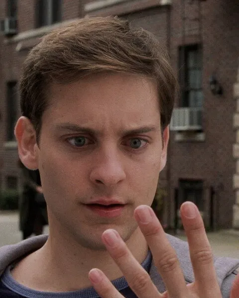

Peter Parker
Héroe · Interpretado por Tobey Maguire
- 2002
- 2004
- 2007
Un estudiante brillante y tímido de Queens que, después de la picadura de una araña, se convierte en Spider-Man. Su gran conflicto nunca es solo el villano de turno, sino cómo sostener su vida personal sin abandonar la responsabilidad que eligió.